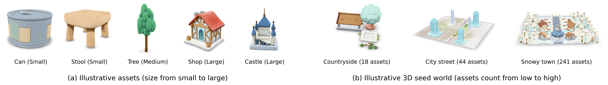
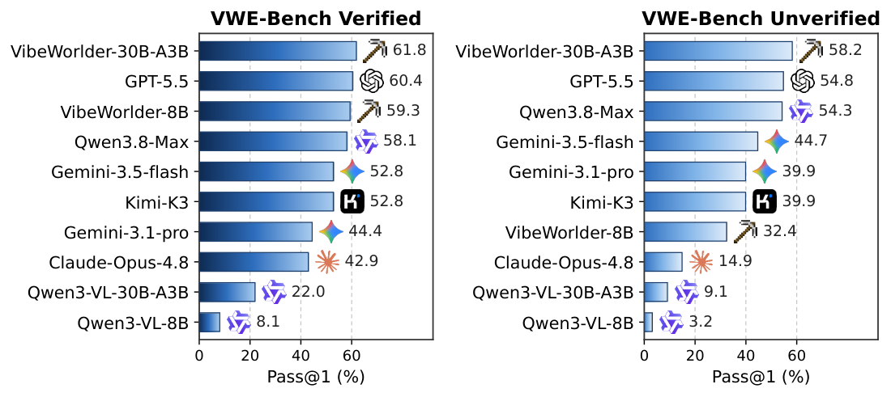
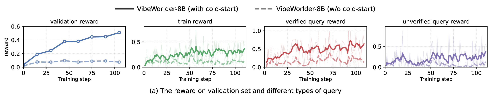

Infer the user's intent from the query, plan a scene layout, and decide which 3D tools to invoke.
Call retrieve_assets, add, delete, and rotation_and_translation inside the Blender sandbox.
Read back the updated 3D map plus five re-rendered views, spot mistakes, and repair them next turn.
Output a simulation-ready world, scored by a rubric verifier on physical feasibility and intent fulfillment.
3D world construction builds a world from scratch given only a text query — for example, "Create a simple farm with a barn, crop fields, fences, and a few trees." 3D world refinement edits an existing world — for example, "Remove the car in the middle of the road and delete the two green buildings."
The same rubric-based verifier serves double duty: it scores the leaderboard and acts as the reward service for multimodal RL post-training, so evaluation and training are measured on identical criteria.
Six representative worlds, streamed as real GLB scenes and rendered live in your browser.
| Query type | Sub-type | Count |
|---|---|---|
| 3D world construction | Theme only | 322 |
| Theme + elements | 620 | |
| Full blueprint | 302 | |
| Distractor | 120 | |
| 3D world refinement | Asset-level edit (precise) verified | 1,710 |
| Asset-level edit (fuzzy) | 1,462 | |
| Scene critique | 553 | |
| Scene guidance | 757 | |
| Scene restatement | 477 | |
| Complex description | 505 | |
| Total | 6,828 |
The three splits use completely disjoint seed worlds (264 SFT / 47 RL / 12 Test, summing to 323), so leaderboard numbers measure generalization rather than seed memorization.
| Split | Contents | Seeds |
|---|---|---|
| Evaluation | 254 cases (46 construction + 208 refinement) | 12 |
| SFT | 5,567 cases (1,129 construction + 4,438 refinement) | 264 |
| RL | 1,007 rollout prompts (189 construction + 818 refinement) | 47 |

Frontier MLLMs are far from solving this task. Even GPT-5.5 (57.3% overall) and Qwen3.8-Max (56.9%) stay below ~60% Pass@1. The bottleneck traces to precise 3D world editing — hitting an exact target map, not merely producing something plausible. Untrained open backbones fare far worse: Qwen3-VL-8B reaches 5.3% and Qwen3-VL-30B-A3B 13.6%.
Post-training closes the gap to the frontier. Cold-start SFT and joint multimodal RL together lift the 30B-A3B backbone from 13.6% (base) to 34.5% (SFT) to 59.3% after RL — the best overall Pass@1 of any model evaluated, edging out GPT-5.5. Its lead is widest on the Verified track (64.5 vs. 60.4).
The 8B model punches above its weight. VibeWorlder-8B reaches 41.4% overall, matching Gemini-3.1-pro (42.7%) while clearly surpassing it on Verified (59.3 vs. 44.4), exactly where rule-checkable editing is required.
The two stages improve different axes. Cold-start SFT installs foundational physical and ecological competence, but delivers gains almost exclusively in 3D understanding (0.02 → 0.17). Multimodal RL is what unlocks spatial capability: 3D understanding climbs 0.17 → 0.80 and 3D reasoning 0.04 → 0.69 — though reasoning stays below understanding, so it is only partially unlocked.

@article{vibeworlding2026, title = {VibeWorlding: Can Multimodal Agents Construct 3D Open Worlds End-to-End?}, author = {Ning, Yansong and Ye, Jingwen and Wu, Zhongkai and Sun, Yang and Zhu, Yiqin and Li, Xingyi and Zhang, Weidong and Liu, Hao}, journal = {arXiv preprint}, year = {2026} }